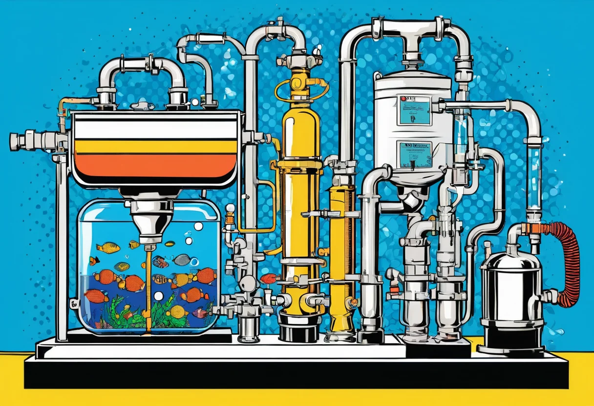
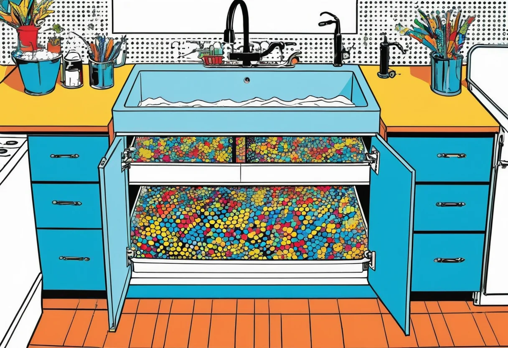

Osmoseanlage und Wasseraufbereitung im Aquarium – Reines Wasser für empfindliche Fische
Die Wasserqualität ist der wichtigste Faktor für ein gesundes Aquarium. Während Leitungswasser in vielen Regionen durchaus für die Aquaristik geeignet ist, stoßen Aquarianer bei empfindlichen Fisch- und Pflanzenarten schnell an Grenzen. Osmoseanlagen bieten hier eine elegante Lösung: Sie filtern das Leitungswasser nahezu vollständig von Verunreinigungen, Schwermetallen und gelösten Salzen und erzeugen reinstes Wasser, das nach Bedarf wieder aufbereitet werden kann. In diesem Artikel erfährst du alles über Funktionsweise, Anwendung und Kaufkriterien von Osmoseanlagen für die Aquaristik.
Warum Osmosewasser? Die Vorteile im Überblick
Osmosewasser – auch als Rein- oder Vollentsalztes Wasser bezeichnet – ist die ideale Basis für die Aquarienwasseraufbereitung. Es enthält nahezu keine gelösten Stoffe mehr und kann daher exakt auf die Bedürfnisse der gepflegten Tiere und Pflanzen eingestellt werden.
Leitungswasser variiert stark je nach Region. Manche Aquarianer haben weiches Wasser mit geringer Karbonathärte (KH 2–5), andere kämpfen mit extrem hartem Wasser (KH 15–20). Für Weichwasserfische wie Diskus, Skalare oder viele Salmler aus dem Amazonasgebiet ist Leitungswasser in Hartwasserregionen völlig ungeeignet. Osmosewasser löst dieses Problem: Es wird mit Leitungswasser oder speziellen Mineralsalzen gemischt, um genau die gewünschten Wasserwerte zu erreichen.
Weitere Vorteile von Osmosewasser sind die Entfernung von Nitrat, Phosphat, Schwermetallen wie Kupfer oder Blei, Chlor- und Chloraminresten sowie Pestizidrückständen. Gerade in der Zucht sensibler Fische und Garnelen ist die Verwendung von Osmosewasser oft der Schlüssel zum Erfolg.


Wie funktioniert eine Osmoseanlage?
Eine Osmoseanlage arbeitet nach dem Prinzip der Umkehrosmose. Dabei wird Leitungswasser unter Druck durch eine semipermeable (halbdurchlässige) Membran gepresst. Diese Membran hat Poren, die nur Wassermoleküle durchlassen, während gelöste Salze, Mineralien, Bakterien und Schadstoffe zurückgehalten werden.
Der Aufbau einer typischen Osmoseanlage für die Aquaristik besteht aus mehreren Stufen:
- Sedimentfilter (Partikelfilter): Die erste Stufe filtert grobe Partikel wie Sand, Rost oder Kalkflocken aus dem Leitungswasser. Dieser Filter schützt die nachfolgenden Stufen vor Verstopfung.
- Aktivkohlefilter: Die zweite Stufe entfernt Chlor, Chloramine, organische Verbindungen und geschmacksbeeinträchtigende Stoffe. Aktivkohle ist essenziell, da Chlor die Osmosemembran beschädigen würde.
- Osmose-Membran: Das Herzstück der Anlage. Die Membran besteht aus hauchdünnen, aufgerollten Polyamid-Schichten, die bis zu 99 % aller gelösten Stoffe zurückhalten. Das Permeat (reines Wasser) wird in einem Tank oder direkt gesammelt, während das Konzentrat (Ableitwasser) mit den zurückgehaltenen Stoffen abfließt.
- Optional: Mischbettharz (Vollentsalzer): Eine weiterführende Stufe mit Ionentauscher, die die letzten Reste an Ionen aus dem Wasser entfernt. Das Ergebnis ist praktisch destilliertes Wasser.
Die Filterleistung wird in Gallonen pro Tag (GPD) angegeben. Übliche Anlagen für die Aquaristik haben Leistungen von 50 bis 150 GPD (ca. 190–570 Liter pro Tag). Die tatsächliche Ausbeute hängt vom Wasserdruck und der Temperatur ab.
Die richtige Osmoseanlage für dein Aquarium
Bei der Auswahl einer Osmoseanlage spielen mehrere Faktoren eine Rolle:
Leistung und Durchfluss
Für ein Standard-Gesellschaftsbecken mit 100–200 Litern reicht eine Anlage mit 50–75 GPD (ca. 190–280 Liter/Tag). Bei größeren Becken oder regelmäßigem Wasserwechsel mehrerer Becken solltest du zu einer leistungsstärkeren Anlage greifen. Bedenke, dass die tatsächliche Produktionsrate unter Realbedingungen (niedrigerer Druck, kaltes Wasser) oft nur 50–70 % der Nennleistung beträgt.
Anschlüsse und Platzierung
Osmoseanlagen werden direkt an die Wasserleitung angeschlossen – entweder am Waschbecken-Umschaltventil oder permanent an der Kaltwasserleitung unter der Spüle. Die Anlage benötigt einen Abfluss für das Konzentrat (ca. 2–4 Liter pro Liter Osmosewasser). Stell sicher, dass genügend Platz unter der Spüle oder im Technikschrank vorhanden ist.
Wasserdruck
Der optimale Wasserdruck für eine Osmoseanlage liegt bei 4–6 bar. In manchen Haushalten (besonders in oberen Stockwerken) ist der Druck niedriger, was die Leistung reduziert. Eine Druckerhöhungspumpe kann hier Abhilfe schaffen. Bei zu hohem Druck (über 8 bar) ist ein Druckminderer notwendig.
Filterlebensdauer
Sediment- und Aktivkohlefilter sollten alle 6–12 Monate gewechselt werden. Die Osmose-Membran hält bei guter Pflege 2–4 Jahre. Ein TDS-Meter (Total Dissolved Solids) hilft dir, die Filterleistung zu überwachen: Steigt der TDS-Wert im Permeat über 20–30 ppm, sollte die Membran getauscht werden.
🛒 Empfohlene Produkte
Wasseraufbereitung nach der Osmose
Reines Osmosewasser ist nicht zum direkten Einsatz im Aquarium geeignet – es enthält keinerlei Mineralien mehr und würde bei Fischen und Pflanzen zu Mangelerscheinungen führen. Die Aufbereitung erfolgt daher auf mehrere Arten:
Mischen mit Leitungswasser
Die einfachste und gebräuchlichste Methode: Osmosewasser wird im gewünschten Verhältnis mit Leitungswasser gemischt, um die Zielwasserwerte zu erreichen. Ein Verhältnis von 50:50 produziert beispielsweise Wasser mit halber Leitfähigkeit und Härte des Leitungswassers. Die genauen Anteile werden über die gemessenen Zielwerte (pH, GH, KH, Leitwert) ermittelt.
Aufhärten mit Mineralsalzen
Fortgeschrittene Aquarianer mischen das Osmosewasser gezielt mit handelsüblichen Aufhärtesalzen, um exakt die gewünschten Wasserparameter zu erzielen. Remineralisierungsprodukte wie „GH/KH+ Salze" enthalten Calcium, Magnesium und Hydrogencarbonate und erlauben eine präzise Steuerung der Wasserhärte.
Einsatz in der Zucht
In der Fisch- und Garnelenzucht wird Osmosewasser oft verwendet, um ganz bestimmte Zuchtbedingungen zu schaffen. Für die Nachzucht von Caridina-Garnelen etwa ist extrem weiches Wasser mit einer GH von 3–5 und einer KH von 0–1 notwendig – das lässt sich nur mit Osmosewasser zuverlässig erreichen.
Osmoseanlage oder Vollentsalzer?
Neben der Osmoseanlage gibt es auch sogenannte Vollentsalzer (VE-Anlagen), die mit Ionentauscherharzen arbeiten. Diese Anlagen produzieren ebenfalls vollentsalztes Wasser, aber auf chemischem Wege ohne Membran. Die Vor- und Nachteile im Vergleich:
- Osmoseanlage: Höhere Anschaffungskosten (50–200 €), aber deutlich geringere Betriebskosten. Filterwechsel alle 6–12 Monate kostengünstig. Die Membran hält Jahre. Ideal bei regelmäßigem, hohem Wasserbedarf.
- Vollentsalzer (Patronensystem): Günstiger in der Anschaffung (30–80 €), aber höhere laufende Kosten. Die Ionentauscherharze müssen regelmäßig regeneriert oder ersetzt werden. Ideal für kleinere Wassermengen oder als Notlösung.
Für die dauerhafte Aquarienwasseraufbereitung ist eine Osmoseanlage fast immer die wirtschaftlich und ökologisch sinnvollere Wahl.
Installation und Inbetriebnahme
Die Installation einer Osmoseanlage ist einfacher als viele denken. Die meisten Modelle werden mit einer ausführlichen Anleitung geliefert. Grundsätzlich gehst du wie folgt vor:
- Kaltwasserleitung abstellen und den Kugelhahn der Osmoseanlage an den Eckventil-Anschluss oder das Waschbecken-Umschaltventil montieren.
- Sediment- und Aktivkohlefilter in die entsprechenden Gehäuse einsetzen.
- Die Membran vorsichtig (nur mit sauberen Händen) in das Membrangehäuse einschieben.
- Den Ablauf für das Konzentrat am Siphon oder Abflussrohr installieren.
- Wasserhahn öffnen und die Anlage spülen: Die ersten 5–10 Liter Osmosewasser verwerfen, da sie noch Konservierungsstoffe der Membran enthalten können.
- TDS-Wert messen – liegt er unter 15–20 ppm, ist die Anlage betriebsbereit.
Wartung und Pflege
Eine Osmoseanlage benötigt regelmäßige, aber überschaubare Wartung:
- Vorfilter (Sediment + Aktivkohle): Alle 6–8 Monate wechseln, bei sehr schlechter Wasserqualität häufiger.
- Membran: Alle 2–3 Jahre wechseln oder bei steigendem TDS-Wert.
- Desinfektion: Bei längerem Stillstand (z. B. Urlaub) die Anlage spülen oder die Membran mit Natriummetabisulfit konservieren.
- Frostschutz: Osmoseanlagen dürfen nicht einfrieren – im Winter im unbeheizten Keller abmontieren.
Fazit
Eine Osmoseanlage ist für ambitionierte Aquarianer eine lohnende Investition. Sie ermöglicht dir die präzise Steuerung der Wasserwerte, schützt deine Fische vor Schadstoffen und eröffnet neue Möglichkeiten in der Zucht empfindlicher Arten. Die Anschaffungskosten amortisieren sich bereits nach 1–2 Jahren im Vergleich zu gekauftem Osmosewasser aus dem Zoofachhandel. Mit der richtigen Pflege und regelmäßigen Filterwechseln wirst du viele Jahre Freude an deiner Osmoseanlage haben und deine Fische werden es dir mit Vitalität und Farbe danken.
Mehr zur Wasseraufbereitung erfährst du in unserem Guide zu den Wasserwerten im Aquarium.